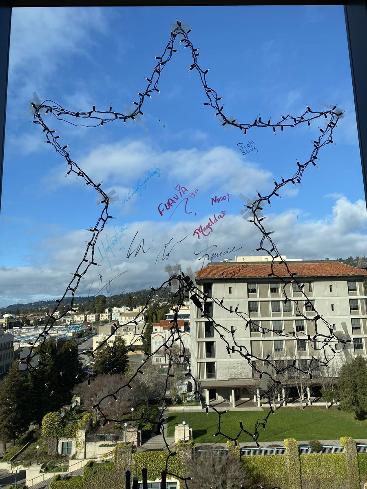

Overview
Colin M. Warnes, MPH
PhD Candidate, Imperial College London
I'm a doctoral student in the Dorigatti Group at Imperial College London. My work sits between computational modelling and the lab to develop translational solutions. I am currently focusing on statistical and within-host models to profile viral biomarker kinetics across the course of infection, and how acute-stage biomarkers can inform therapeutics. Before Imperial I worked on dengue, chikungunya and yellow fever at UC Berkeley and spent two years working on antibody engineering and assay development at Glyphic Bio. My goal is to take lab research, optimize it for patient care, and evaluate the efficacy of the intervention.
Experience
-
Imperial College London2024 – presentPhD Candidate, Clinical Medicine Research (Public Health)
Bayesian regression and within-host models of viral biomarker kinetics during infection.
-
Glyphic Biotechnologies2022 – 2024Scientist I, Molecular Biology · Berkeley, CA
Designed nucleic acid processes using DNA origami, click chemistry and sequencing readout; evaluated antibody candidates and bioconjugation.
-
Oxford University Clinical Research Unit2021, 2022CGPH Research Fellow · Ho Chi Minh City, Vietnam
Established on-site assays for biomarkers implicated in dengue virus infection.
-
UC Berkeley, Harris Lab2020 – 2022Graduate Student Researcher
Characterised chikungunya disease in a Nicaraguan cohort; built low-cost dengue (DENV1–4) and yellow fever NS1 capture ELISAs used across Nicaragua, Ecuador, Vietnam and Brazil.
Education
-
PhD, Clinical Medicine Research2024 – presentImperial College London · President's PhD Scholar
-
MPH, Infectious Disease & Vaccinology2022University of California, Berkeley
-
BS, Health: Science, Society & Policy2017Brandeis University · Minor in International & Global Studies
Publications
From ORCID
- Warnes CM, et al. The burden of post-acute chikungunya-associated arthralgia in children and adults. PLOS Neglected Tropical Diseases, 2024.
- de Sousa FTG, Warnes CM, et al. Yellow fever disease severity and endothelial dysfunction are associated with elevated serum levels of viral NS1 protein and syndecan-1. eBioMedicine, 2024.
- Biering SB, et al. SARS-CoV-2 Spike triggers barrier dysfunction and vascular leak via integrins and TGF-β signaling. Nature Communications, 2022.
- Warnes CM, et al. The epidemiology and surveillance of dengue in Medellín, Colombia, 2009–2017. American Journal of Tropical Medicine and Hygiene, 2021.
- Puerta-Guardo H, et al. Flavivirus NS1-triggered endothelial dysfunction promotes virus dissemination. PLOS Pathogens, 2025.
Patents: WO2025064836 and WO2025166050 (co-inventor, Glyphic Bio).
Awards
- Best Poster Award, President's PhD Scholarship Symposium, Imperial, 2025
- President's PhD Scholarship, Imperial College London, 2024–2028
- Sanford Elberg Award for Outstanding IDV Capstone Project-Analytical Paper, UC Berkeley School of Public Health, 2022
- Center for Global Public Health Research Fellowship, UC Berkeley, 2021–2022
Skills
- Languages English (native), Farsi (native spoken), Spanish (fluent)
- Computing R, Stan, Java, HTML/CSS
- Lab Immunoassays, nucleic acid design, antibody production, virology
Photos
